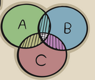

Entre 30 alunos de uma sala de aula, 20 gostam de vôlei, 20 gostam de futebol e todos eles gostam de pelo
menos um esporte. Como isso é possível?
Conjunto é um conceito primitivo desenvolvido pelo matemático George Cantor.
A partir dele se desenvolveu diversos outros estudos matemáticos.
Ex: N = {1, 2, 3,4,5, 6, ...}
Z = {... -4, -3, -2, -1, 0, 1, 2, 3,4, ...}
Q = a/b tal que a e b pertence aos Z
Um diagrama de Venn é um gráfico que usa círculos sobrepostos para representar
relações entre conjuntos de dados.

Em um colégio, de 100 alunos, 80 gostam de sorvete de chocolate, 70 gostam de sorvete de creme e 60
gostam dos dois sabores. Quantos alunos não gostam de nenhum dos dois sabores?
Um grupo de 87 pessoas,51 possuem automóvel ,42 possuem moto e 5 pessoas não possuem nenhum dos dois veículos.
O número de pessoas desse grupo que possuem automóvel e moto é:
(UNB) De 200 pessoas pesquisadas sobre suas preferências em assistir aos campeonatos de corrida pela televisão,
foram colhidos os seguintes dados:
55 dos entrevistados não assistem;
101 assistem às corridas de Fórmula l;
27 assistem às corridas de Fórmula l e de Motovelocidade;
Das pessoas entrevistadas, quantas assistem, exclusivamente, às corridas de Motovelocidade?